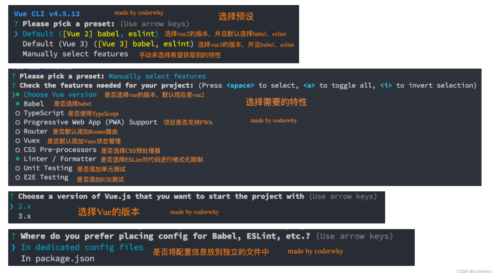
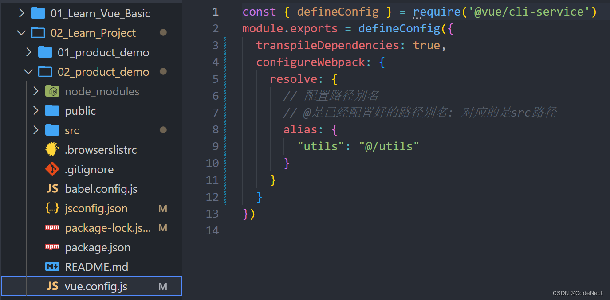
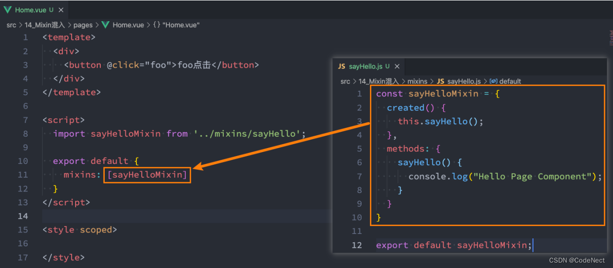

一、组件化开发思想
组件化是Vue、React、Angular的核心思想：
- 前面我们的createApp函数传入了一个对象App，这个对象其实本质上就是一个组件，也是我们应用程序的根组件
- 组件化提供了一种抽象，让我们可以开发出一个个独立可复用的小组件来构造我们的应用
- 任何的应用都会被抽象成一颗组件树
1. 注册全局组件
- 全局组件：在任何其他的组件中都可以使用的组件
- 通过component方法传入组件名称、组件对象即可注册一个全局组件了
<div id="app">
<HomeNav></HomeNav>
<home-nav></home-nav>
<product-item></product-item>
<product-item></product-item>
<product-item></product-item>
</div>
<template id="nav">
<h2>我是应用程序的导航</h2>
</template>
<template id="product">
<div class="product">
<h2>{{title}}</h2>
<p>商品描述, 限时折扣, 赶紧抢购</p>
<p>价格: {{price}}</p>
<button @click="favarItem">收藏</button>
</div>
</template>
<script src="../lib/vue.js"></script>
<script>
// 1.创建app
const app = Vue.createApp({
// data: option api
data() {
return {}
},
})
// 2.注册全局组件
app.component("product-item", {
template: "#product",
data() {
return {
title: "我是商品Item",
price: 9.9
}
},
methods: {
favarItem() {
console.log("收藏了当前的item")
}
}
})
app.component("HomeNav", {
template: "#nav"
})
// 3.挂载app
app.mount("#app")
</script>2. 注册局部组件
- 局部组件：只有在注册的组件中才能使用的组件（常用）
- 通过components属性选项来进行注册
<div id="app">
<home-nav></home-nav>
<product-item></product-item>
<product-item></product-item>
<product-item></product-item>
</div>
<template id="product">
<div class="product">
<h2>{{title}}</h2>
<p>商品描述, 限时折扣, 赶紧抢购</p>
<p>价格: {{price}}</p>
<button>收藏</button>
</div>
</template>
<template id="nav">
<div>-------------------- nav start ---------------</div>
<h1>我是home-nav的组件</h1>
<product-item></product-item>
// 在此组件中加components属性才可使用
<div>-------------------- nav end ---------------</div>
</template>
<script src="../lib/vue.js"></script>
<script>
const ProductItem = {
template: "#product",
data() {
return {
title: "我是product的title",
price: 9.9
}
}
}
// 1.创建局部组件
const app = Vue.createApp({
// components: option api
components: {
ProductItem,
HomeNav: {
template: "#nav",
components: {
ProductItem
}
}
},
// data: option api
data() {
return {
message: "Hello Vue"
}
}
})
// 2.挂载app
app.mount("#app")
</script>二、Vue 脚手架
在真实开发中，我们可以通过一个后缀名为 .vue 的single-file components (单文件组件) 来解决，并且可以使用 webpack或者vite或者rollup等构建工具来对其进行处理
想要使用这一的SFC的.vue文件，比较常见的是两种方式：
- 方式一：使用Vue CLI来创建项目，项目会默认帮助我们配置好所有的配置选项，可以在其中直接使用.vue文件
- 方式二：自己使用webpack或rollup或vite这类打包工具，对其进行打包处理
1. Vue CLI 安装和使用
Vue的脚手架就是Vue CLI：
- CLI是Command-Line Interface, 翻译为命令行界面
- 我们可以通过CLI选择项目的配置和创建出我们的项目
- Vue CLI已经内置了webpack相关的配置，我们不需要从零来配置
1.1 安装
- 安装Vue CLI：
npm install @vue/cli -g - 升级Vue CLI：
npm update @vue/cli -g
1.2 vue create 项目的过程
- 通过Vue的命令来创建项目：
Vue create 项目的名称

2. Vue 项目目录结构
node_modules: 安装的所有依赖包
public： public目录存放的是一些公用文件
---favicon.ico 图标
---index.html 打包webpack时所需要的的HTML 模板
src： 存放vue项目的源代码
--assets: 资源文件,比如存放css,图片等资源
--components: 组件文件夹
--APP.vue 根组件
--main.js 项目的入口文件
.browserslistrc： 设置目标浏览器,进行浏览器适配
.gitignore： git的忽略文件
babel.config.js： babel的配置
jsconfig.json： 给vscode进行读取,vscode在读取到其中的内容时,给我们代码更加友好的提示
package-lock.json： 项目包的锁定文件,npm install 可以通过package-lock文件来检测lock中包的版本是否和package.json中一致 ---一致,会优先查找缓存,不一致,就会重新构建依赖关系
package.json： npm配置文件,记录这你项目的名称,版本号,项目描述,也记录项目所依赖的其他库的信息和依赖库的版本号
README.md： 项目说明(描述)
vue.config.js： vue 的配置文件3. vue 初步使用
- main.js
import { createApp } from "vue";
import App from "./components/App.vue";
// import ProductItem from "./components/ProductItem.vue";
const app = createApp(App);
// 全局注册
// app.component("product-item", ProductItem);
app.mount("#app");- App.vue
<template>
<h2>{{ title }}</h2>
<h2>当前计数：{{ counter }}</h2>
<button @click="decrement">-</button>
<button @click="increment">+</button>
<product-item></product-item>
</template>
<script>
// 局部注册
import ProductItem from "./ProductItem.vue"
export default {
components: {
ProductItem,
},
data() {
return {
title: "我还是标题",
counter: 0,
};
},
methods: {
decrement() {
this.counter--;
},
increment() {
this.counter++;
},
},
}
</script>
<style>
h2 {
color: red;
}
</style>- ProductItem.vue
<template>
<div class="product">
<h2>我是商品</h2>
<div>商品图片</div>
<div>
商品价格: <span>¥{{ price }}</span>
</div>
</div>
</template>
<script>
export default {
data() {
return {
price: 9.9,
count: 0,
};
},
}
</script>
<style></style>4. 知识补充
4.1 jsconfig 文件的作用
给vscode进行读取,vscode在读取到其中的内容时,给我们代码更加友好的提示
jsconfig 文件
vue.config.js 文件

4.2 vue 不同版本的作用
- runtime版本：没有对模板的编译，需要自己写对应的render函数(返回h函数)或者setup返回一个函数，函数的返回值是h函数
- 没有将模板转成vnode节点这一过程
- runtime+comiple 版本：可以将template模板通过compile转换成对应的vnode节点
4.3 css 的 scoped 作用域
每个vue文件中的css：
<style scoped>
.title {
color: red;
}
</style>此时对title的样式只对此vue文件中的.title适用，其他vue文件中不适用
4.4 npm init vue@latest创建项目
- vite打包：
npm init vue@latest
三、组件间的通信
1. 组件的嵌套关系
对组件进行拆分，拆分成一个个功能的小组件：
上面的嵌套逻辑如下，它们存在如下关系：
- App组件是Header、Main、Footer组件的父组件
- Main组件是Banner、ProductList组件的父组件
在开发过程中，我们会经常遇到需要组件之间相互进行通信：
- 父组件传递给子组件：通过props属性
- 子组件传递给父组件：通过$emit触发事件
2. 父传子 - props（重要）
2.1 基本用法
父子组件之间通信，比如父组件有一些数据，需要子组件来进行展示：
Props有两种常见的用法：
- 方式一：==字符串数组==，数组中的字符串就是attribute的名称
- 只能说明传入的attribute的名称，并不能对其进行任何形式的限制
- 方式二：==对象类型==，可以在指定attribute名称的同时，传入更多内容
- 指定传入的attribute的类型
type- 指定类型的最好在父组件传值时使用
:age="18"
- 指定类型的最好在父组件传值时使用
- 指定传入的attribute是否是必传的
required - 指定没有传入时，attribute的默认值
default
- 指定传入的attribute的类型
2.2 更多细节
type 的类型
- String
- Number
- Boolean
- Array
- Object
- Date
- Function
- Symbol
Prop 的大小写命名
- 使用 DOM 中的模板时，camelCase (驼峰命名法) 的 prop 名需要使用其==等价==的 kebab-case (短横线分隔命名) 命名
// App.vue
<template>
<!-- 1.展示why的个人信息 -->
<!-- 如果当前的属性是一个非prop的attribute, 那么该属性会默认添加到子组件的根元素上 -->
<show-info name="why" :age="18" :height="1.88"
address="广州市" abc="cba" class="active" />
<!-- 2.展示kobe的个人信息 -->
<show-info name="kobe" :age="30" :height="1.87" />
<!-- 3.展示默认的个人信息 -->
<show-info :age="100" show-message="哈哈哈哈"/>
</template>
<script>
import ShowInfo from './ShowInfo.vue'
export default {
components: {
ShowInfo
}
}
</script>
<style scoped>
</style>// ShowInfo.vue
<template>
<div class="infos">
<h2 :class="$attrs.class">姓名: {{ name }}</h2>
<h2>年龄: {{ age }}</h2>
<h2>身高: {{ height }}</h2>
<h2>Message: {{ showMessage }}</h2>
</div>
<div class="others" v-bind="$attrs"></div>
</template>
<script>
export default {
// inheritAttrs: false,
// 作用: 接收父组件传递过来的属性
// 1.props数组语法
// 弊端: 1> 不能对类型进行验证 2.没有默认值的
// props: ["name", "age", "height"]
// 2.props对象语法(必须掌握)
props: {
name: {
type: String,
default: "我是默认name"
},
age: {
type: Number,
required: true,
default: 0
},
height: {
type: Number,
default: 2
},
// 重要的原则: 对象类型写默认值时, 需要编写default的函数, 函数返回默认值
friend: {
type: Object,
default() {
return { name: "james" }
}
},
hobbies: {
type: Array,
default: () => ["篮球", "rap", "唱跳"]
},
showMessage: {
type: String,
default: "我是showMessage"
}
}
}
</script>
<style scoped>
</style>2.3 非 prop 的 attribute
- 当我们传递给一个组件某个属性，但是该属性并没有定义对应的props或者emits时，就称之为 非Prop的Attribute
- 当组件有单个根节点时，非Prop的Attribute将自动添加到根节点的Attribute中

2.4 禁用Attribute继承和多根节点
- 如果我们不希望组件的根元素继承attribute，可以在组件中设置
inheritAttrs: false - 多个根节点的attribute如果没有显示的绑定，那么会报警告，我们必须手动的指定要绑定到哪一个属性上
v-bind="$attrs"、:class="$attrs.address"
3. 子传父 - $emit（重要）
当子组件有一些事件发生的时候，比如在组件中发生了点击，父组件需要切换内容； 子组件有一些内容想要传递给父组件：
- 首先，我们需要在子组件中定义好在某些情况下触发的事件名称，之后通过this.$emit的方式发出去事件
- 其次，在父组件中以v-on的方式传入要监听的事件名称，并且绑定到对应的方法中
- 最后，在子组件中发生某个事件的时候，根据事件名称触发对应的事件
// AddCounter.vue
<template>
<div class="add">
<button @click="btnClick(1)">+1</button>
<button @click="btnClick(5)">+5</button>
<button @click="btnClick(10)">+10</button>
</div>
</template>
<script>
export default {
// 1.emits数组语法
emits: ["add"],
// 2.emmits对象语法(了解)
// emits: {
// add: function(count) {
// if (count <= 10) {
// return true
// }
// return false
// }
// },
methods: {
btnClick(count) {
// 让子组件发出去一个自定义事件
// 第一个参数自定义的事件名称
// 第二个参数是传递的参数
this.$emit("add", 100)
}
}
}
</script>
<style scoped>
</style><template>
<div class="app">
<h2>当前计数: {{ counter }}</h2>
<!-- 1.自定义add-counter, 并且监听内部的add事件 -->
<add-counter @add="addBtnClick"></add-counter>
<!-- 2.自定义sub-counter, 并且监听内部的sub事件 -->
<sub-counter @sub="subBtnClick"></sub-counter>
</div>
</template>
<script>
import AddCounter from './AddCounter.vue'
import SubCounter from './SubCounter.vue'
export default {
components: {
AddCounter,
SubCounter
},
data() {
return {
counter: 0
}
},
methods: {
addBtnClick(count) {
this.counter += count
},
subBtnClick(count) {
this.counter -= count
}
}
}
</script>
<style scoped>
</style>4. 阶段案例练习 - TabControl的封装
- 父组件将列表选项中的内容传给子组件
- 子组件将点击选项的事件传给父组件，使父组件下面的页面内容随之改变
四、组件的插槽 Slot
1. 认识 Slot 的作用
假如我们定制一个通用的导航组件 - NavBar
- 这个组件分成三块区域：左边-中间-右边，每块区域的内容是不固定
- 左边区域可能显示一个菜单图标，也可能显示一个返回按钮，可能什么都不显示
- 中间区域可能显示一个搜索框，也可能是一个列表，也可能是一个标题，等等
- 右边可能是一个文字，也可能是一个图标，也可能什么都不显示
定义插槽slot：
- 插槽的使用过程其实是抽取共性、预留不同
- 我们会将共同的元素、内容依然在组件内进行封装
- 同时会将不同的元素使用slot作为占位，让外部决定到底显示什么样的元素
2. Slot 的基本使用和默认值（重要）
// App.vue
<template>
<div class="app">
<!-- 1.内容是button -->
<show-message>
<button>我是按钮元素</button>
</show-message>
<!-- 2.内容是超链接 -->
<show-message>
<a href="#">百度一下</a>
</show-message>
<!-- 3.内容是一张图片 -->
<show-message>
<img src="@/img/kobe02.png" alt="">
</show-message>
<!-- 4.内容没有传递 -->
<show-message></show-message>
</div>
</template>
<script>
import ShowMessage from './ShowMessage.vue'
export default {
components: {
ShowMessage
}
}
</script>
<style scoped>
</style>// ShowMessage.vue
<template>
<h2>哈哈哈哈哈</h2>
<div class="content">
<slot>
<p>我是默认内容, 哈哈哈</p>
</slot>
</div>
</template>
<script>
export default {}
</script>
<style scoped>
</style>3. Slot 的具名插槽（重要）
当有多个插槽时，默认情况下每个插槽都会获取到我们插入的内容来显示。希望达到的效果是插槽对应的显示，这个时候我们就可以使用 具名插槽：
- 具名插槽顾名思义就是给插槽起一个名字， 元素有一个特殊的 attribute：name
- 一个不带 name 的slot，会带有隐含的名字 default
3.1 动态插槽名（了解）
可以通过 v-slot:[dynamicSlotName]方式动态绑定一个名称
// App.vue
<template>
<nav-bar>
<template v-slot:left>
<button>{{ leftText }}</button>
</template>
// 语法糖写法
<template #center>
<span>内容</span>
</template>
<template #right>
<a href="#">登录</a>
</template>
</nav-bar>
<!-- nav-bar只给一个插槽传入数据 -->
<nav-bar>
<template v-slot:[position]>
<a href="#">注册</a>
</template>
</nav-bar>
<button @click=" position = 'left' ">左边</button>
<button @click=" position = 'center' ">中间</button>
<button @click=" position = 'right' ">右边</button>
</template>
<script>
import NavBar from './NavBar.vue'
export default {
components: {
NavBar
},
data() {
return {
position: "center",
leftText: "返回"
}
}
}
</script>
<style scoped>
</style>// NavBar.vue
<template>
<div class="nav-bar">
<div class="left">
<slot name="left">left</slot>
</div>
<div class="center">
<slot name="center">center</slot>
</div>
<div class="right">
<slot name="right">right</slot>
</div>
</div>
<div class="other">
<slot name="default"></slot>
</div>
</template>
<script>
export default {}
</script>
<style scoped>
.nav-bar {
display: flex;
height: 44px;
line-height: 44px;
text-align: center;
}
.left {
width: 80px;
background-color: orange;
}
.center {
flex: 1;
background-color: skyblue;
}
.right {
width: 80px;
background-color: aquamarine;
}
</style>4. 作用域插槽
4.1 渲染作用域
在Vue中有渲染作用域的概念：
- 父级模板里的所有内容都是在父级作用域中编译的
- 子模板里的所有内容都是在子作用域中编译的
4.2 作用域插槽使用
- 核心：希望父组件可以访问到slot传入的子组件的内容
阶段案例练习改进版：
// TabControl.vue
<template>
<div class="tab-control">
<template v-for="(item, index) in titles" :key="item">
<div class="tab-control-item"
:class="{ active: index === currentIndex }"
@click="itemClick(index)">
// 选项列表中的内容形式span希望可以在外部更改为其他形式(如button)，故引入slot插槽
// 将子组件的内容item、abc通过slot传至父组件
<slot :item="item" abc="cba">
<span>{{ item }}</span>
</slot>
</div>
</template>
</div>
</template>
<script>
export default {
props: {
titles: {
type: Array,
default: () => [],
},
},
data() {
return {
currentIndex: 0,
};
},
emits: ["tabItemClick"],
methods: {
itemClick(index) {
this.currentIndex = index;
this.$emit("tabItemClick", index);
},
},
};
</script>
<style scoped>
.tab-control {
display: flex;
height: 44px;
line-height: 44px;
text-align: center;
}
.tab-control-item {
flex: 1;
}
.tab-control-item.active {
color: red;
font-weight: 700;
}
.tab-control-item.active span {
border-bottom: 3px solid red;
padding: 8px;
}
</style>// App.vue
<template>
<div class="app">
<!-- 1.tab-control -->
<tab-control :titles="['衣服', '鞋子', '裤子']"
@tab-item-click="tabItemClick"/>
<!-- 2.展示内容 -->
<h1>{{ pageContents[currentIndex] }}</h1>
<!-- 1.tab-control: button -->
<tab-control :titles="['衣服', '鞋子', '裤子']"
@tab-item-click="tabItemClick">
// 从子组件中接收到内容放入props中
<template v-slot:default="props">
<button>{{ props.item }}</button>
</template>
</tab-control>
<!-- 2.tab-control: a元素(重要) -->
<tab-control :titles="['衣服', '鞋子', '裤子']"
@tab-item-click="tabItemClick">
// 从子组件中接收到内容放入props中
<template #default="props">
<a href="#">{{ props.item }}</a>
</template>
</tab-control>
</div>
</template>
<script>
import TabControl from './TabControl.vue'
export default {
components: {
TabControl
},
data() {
return {
pageContents: [ "衣服列表", "鞋子列表", "裤子列表" ],
currentIndex: 0
}
},
methods: {
tabItemClick(index) {
this.currentIndex = index
}
}
}
</script>
<style scoped>
</style>五、非父子组件的通信
主要有两种方式：
- 全局事件总线
- Provide/Inject
1. Provide / Inject
一些深度嵌套的组件，子组件想要获取父组件的部分内容，可以使用 Provide 和 Inject ：
- 无论层级结构有多深，父组件都可以作为其所有子组件的依赖提供者
- 父组件有一个 provide 选项来提供数据
- 子组件有一个 inject 选项来开始使用这些数据
1.1 函数写法
如果Provide中提供的一些数据是来自data，那么我们可能会想要通过this来获取：
- 此时使用对象写法会报错
- 在日常使用中我们一般采用函数写法
1.2 数据的响应式
如果修改了names之后，之前在provide中引入的 this.names.length 本身并不是响应式的：
- 可以使用响应式的一些API来完成这些功能，比如说computed函数
- 因为computed返回的是一个ref对象，需要取出其中的value来使用
2. 事件总线 hy-event-store
封装一个工具eventbus.js：
npm install hy-event-store
在Banner.vue中触发事件：
eventBus.emit("事件名"，参数)在App.vue中监听事件：
eventBus.on("事件名"，回调函数)
// HomeBanner.vue
<template>
<div class="banner">
<button @click="bannerBtnClick">banner按钮</button>
</div>
</template>
<script>
import eventBus from './utils/event-bus'
export default {
methods: {
bannerBtnClick() {
console.log("bannerBtnClick")
eventBus.emit("whyEvent", "why", 18, 1.88)
}
}
}
</script>// App.vue
<template>
<div class="app">
<h2>App Message: {{ message }}</h2>
<home></home>
<button @click="isShowCategory = false">是否显示category</button>
<category v-if="isShowCategory"></category>
</div>
</template>
<script>
import eventBus from './utils/event-bus'
import Home from './Home.vue'
import Category from './Category.vue'
export default {
components: {
Home,
Category
},
data() {
return {
message: "Hello App",
isShowCategory: true
}
},
created() {
// fetch()
// 事件监听
eventBus.on("whyEvent", (name, age, height) => {
console.log("whyEvent事件在app中监听", name, age, height)
this.message = `name:${name}, age:${age}, height:${height}`
})
}
}
</script>2.1 取消事件
某些情况下我们希望取消掉之前注册的函数监听：
// Category.vue
<template>
<div>
<h2>Category</h2>
</div>
</template>
<script>
import eventBus from './utils/event-bus'
export default {
methods: {
whyEventHandler() {
console.log("whyEvent在category中监听")
}
},
created() {
eventBus.on("whyEvent", this.whyEventHandler)
},
unmounted() {
console.log("category unmounted")
<!-- 取消事件 -->
eventBus.off("whyEvent", this.whyEventHandler)
}
}
</script>六、组件化-额外知识补充
1. 组件的生命周期（重要）
- 生命周期函数是一些钩子函数（回调函数），在某个时间会被Vue源码内部进行回调
- 通过对生命周期函数的回调，我们可以知道目前组件正在经历什么阶段
- 那么我们就可以在该生命周期中编写属于自己的逻辑代码了
2. refs引入元素/组件（重要）
某些情况下，我们在组件中想要直接获取到元素对象或者子组件实例：
- 在Vue开发中我们是不推荐进行DOM操作的
- 这个时候，我们可以给元素或者组件绑定一个ref的attribute属性
- 通过$parent来访问父元素
- 通过$root来访问根组件
// App.vue
<template>
<div class="app">
<!-- 绑定ref属性 -->
<h2 ref="title" class="title" :style="{ color: titleColor }">
{{ message }}
</h2>
<button ref="btn" @click="changeTitle">修改title</button>
<banner ref="banner" />
</div>
</template>
<script>
import Banner from "./Banner.vue";
export default {
components: {
Banner,
},
data() {
return {
message: "Hello World",
titleColor: "red",
};
},
methods: {
changeTitle() {
// 1.获取h2/button元素
console.log(this.$refs.title);
console.log(this.$refs.btn);
// 2.获取banner组件: 组件实例
console.log(this.$refs.banner); // Proxy(Object) {bannerClick: ƒ, …}
// 2.1.在父组件中可以主动的调用子组件的对象方法
this.$refs.banner.bannerClick();
// 2.2.获取banner组件实例, 获取banner template中的所有元素(单根)
console.log(this.$refs.banner.$el);
// 2.3.如果banner template是多个根, 拿到的是第一个node节点
// 注意: 开发中不推荐一个组件的template中有多个根元素
// console.log(this.$refs.banner.$el.nextElementSibling)
// 3.组件实例还有两个属性(了解):
console.log(this.$parent); // 获取父组件 null
console.log(this.$root); // 获取根组件 Proxy(Object) {changeTitle: ƒ, …}
},
},
};
</script>3. 动态组件的使用
想要实现了一个功能：点击一个tab-bar，切换不同的内容显示
可以使用动态组件的方式实现
- 动态组件是使用 component 组件，通过一个特殊的attribute is 来实现：
- 动态组件的传值：将属性和监听事件放到component上来使用
// App.vue
<template>
<div class="app">
<div class="tabs">
<template v-for="item in tabs" :key="item">
<button :class="{ active: currentTab === item }"
@click="itemClick(item)">
{{ item }}
</button>
</template>
</div>
<div class="view">
<!-- 做法: 动态组件 component -->
<!-- is中的组件需要来自两个地方: 1.全局注册的组件 2.局部注册的组件 -->
<!-- 传值 -->
<component :is="currentTab"
name="why"
:age="18"
@homeClick="homeClick">
</component>
</div>
</div>
</template>
<script>
import Home from './views/Home.vue'
import About from './views/About.vue'
import Category from './views/Category.vue'
export default {
components: {
Home,
About,
Category
},
data() {
return {
tabs: ["home", "about", "category"],
currentTab: "home"
}
},
methods: {
itemClick(tab) {
this.currentTab = tab
},
homeClick(payload) {
console.log("homeClick:", payload)
}
}
}
</script>
<style scoped>
.active {
color: red;
}
</style>// Home.vue
<template>
<div>
<h2>Home组件: {{ name }} - {{ age }}</h2>
<button @click="homeBtnClick">homeBtn</button>
</div>
</template>
<script>
export default {
// 与父组件进行传值
props: {
name: {
type: String,
default: ""
},
age: {
type: Number,
default: 0
}
},
emits: ["homeClick"],
methods: {
homeBtnClick() {
this.$emit("homeClick", "home")
}
}
}
</script>4. keep-alive
- 默认情况下，我们在切换组件后，原组件会被销毁掉，再次回来时会重新创建组件
- 在开发中某些情况我们希望继续保持组件的状态，而不是销毁掉，这个时候我们就可以使用一个内置组件：keep-alive
4.1 keep-alive 属性
keep-alive有一些属性：
- include - string | RegExp | Array。只有名称匹配的组件会被缓存
- exclude - string | RegExp | Array。任何名称匹配的组件都不会被缓存
- max - number | string。最多可以缓存多少组件实例，一旦达到这个数 字，那么缓存组件中最近没有被访问的实例会被销毁
include 和 exclude prop 允许组件有条件地缓存：
- 二者都可以用逗号分隔字符串、正则表达式或一个数组来表示
- 匹配首先检查组件自身的
name选项
4.2 缓存组件的生命周期
对于缓存的组件来说，再次进入时，我们是不会执行created或者mounted等生命周期函数的：
- 可以使用activated 监听到何时重新进入到了组件
- 可以使用 deactivated 监听到何时离开了组件
// App.vue
<template>
<div class="app">
<div class="tabs">
<template v-for="item in tabs" :key="item">
<button :class="{ active: currentTab === item }"
@click="itemClick(item)">
{{ item }}
</button>
</template>
</div>
<div class="view">
<!-- include: 组件的名称来自于组件定义时 name 选项 -->
<keep-alive include="home,about">
<component :is="currentTab"></component>
</keep-alive>
</div>
</div>
</template>
<script>
import Home from './views/Home.vue'
import About from './views/About.vue'
import Category from './views/Category.vue'
export default {
components: {
Home,
About,
Category
},
data() {
return {
tabs: ["home", "about", "category"],
currentTab: "home"
}
},
methods: {
itemClick(tab) {
this.currentTab = tab
},
homeClick(payload) {
console.log("homeClick:", payload)
}
}
}
</script>
<style scoped>
.active {
color: red;
}
</style>// Home.vue
<template>
<div>
<h2>Home组件</h2>
<h2>当前计数: {{ counter }}</h2>
<button @click="counter++">+1</button>
</div>
</div>
</template>
<script>
export default {
// 需有name，与include配对
name: "home",
data() {
return {
counter: 0
}
},
created() {
console.log("home created")
},
unmounted() {
console.log("home unmounted")
},
// 对于保持keep-alive组件, 监听有没有进行切换
// keep-alive组件进入活跃状态
activated() {
console.log("home activated")
},
deactivated() {
console.log("home deactivated")
}
}
</script>5. 异步组件的使用
5.1 webpack 分包处理
- 默认的打包过程：
- 默认情况下，在构建整个组件树的过程中，因为组件和组件之间是通过模块化直接依赖的，那么webpack在打包时就会将组件模块打包到一起（比如一个app.js文件中）
- 随着项目的不断庞大，app.js文件的内容过大，会造成首屏的渲染速度变慢
- 打包时，代码的分包：
- 所以，对于一些不需要立即使用的组件，我们可以单独对它们进行拆分，拆分成一些小的代码块chunk.js
- 这些chunk.js会在需要时从服务器加载下来，并且运行代码，显示对应的内容
5.2 Vue 中实现异步组件
提供了一个函数：defineAsyncComponent
6. 组件的 v-model
vue也支持在组件上使用v-model
// App.vue
为了我们的MyInput组件可以正常的工作，这个组件内的<input>必须：
- 将其 value attribute 绑定到一个名叫 modelValue 的 prop 上
- 在其 input 事件被触发时，将新的值通过自定义的 update:modelValue 事件抛出
// MyInput.vue
6.1 绑定多个自定义名称属性
- 默认情况下的v-model其实是绑定了 modelValue 属性和 @update:modelValue的事件
- 如果我们希望绑定更多，可以给v-model传入一个参数，那么这个参数的名称就是我们绑定属性的名称；
// App.vue
// MyInput.vue
7. 混入 Mixin
组件和组件之间有时候会存在相同的代码逻辑，我们希望对相同的代码逻辑进行抽取
7.1 Mixin 的基本使用

如果Mixin对象中的选项和组件对象中的选项发生了冲突，合并规则：（以组件对象为优先）
- ==情况一：如果是data函数的返回值对象==
- 返回值对象默认情况下会进行合并
- 如果data返回值对象的属性发生了冲突，那么会保留组件自身的数据
- ==情况二：生命周期钩子函数==
- 生命周期的钩子函数会被合并到数组中，都会被调用
- ==情况三：值为对象的选项==，例如 methods、components 和 directives，将被合并为同一个对象。
- 比如都有methods选项，并且都定义了方法，那么它们都会生效
- 但是如果对象的key相同，那么会取组件对象的键值对
7.2 全局混入 Mixin
如果组件中的某些选项，是所有的组件都需要拥有的，那么这个时候我们可以使用全局的mixin：
- 全局的Mixin可以使用 应用app的方法 mixin 来完成注册
- 一旦注册，那么全局混入的选项将会影响每一个组件